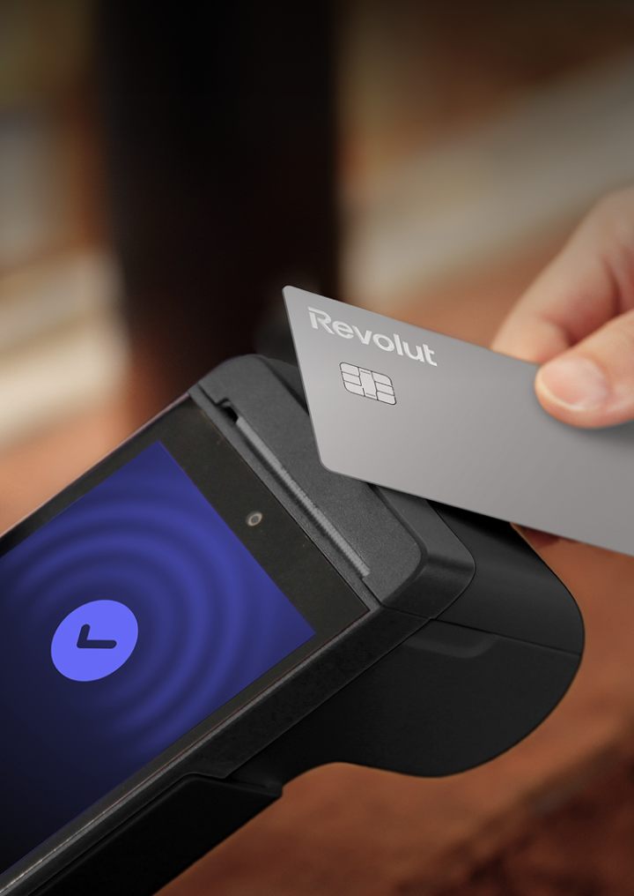

Odoo 18 Restaurant companion Free · LGPL-3
Add Revolut terminal payments to Odoo Restaurant tables, split bills and Takeout orders. This free companion works with POS Revolut and standard Odoo Restaurant.
Table service
Dine In orders
Split bills
Native Odoo workflow
Takeout
Order presets

Restaurant workflows
Select Revolut on the payment screen for a table order. Odoo verifies the payment before completing the sale.
Use Odoo Restaurant to split an unpaid bill, then collect each payment with the Revolut terminal integration.
Use the addon-provided Dine In and Takeout presets. Table and order context determine the payment fulfilment.
Installation
01
Install standard Odoo Restaurant, POS Revolut and this companion. Deploy pos_revolut and pos_revolut_restaurant_integration from the same Odoo 18.0 source release.
02
Complete the Merchant credentials, payment method and register access setup in POS Revolut. Configure the Restaurant presets, then reopen POS to load the integration.
When standard Restaurant is already installed, deploy both matching Revolut addons before upgrading POS Revolut. Confirm that POS Revolut Restaurant is installed before reopening registers. Existing payment references remain available for recovery.
Developed and maintained by Davai. Revolut Terminal photograph from Revolut Business. Revolut and Odoo trademarks belong to their respective owners.